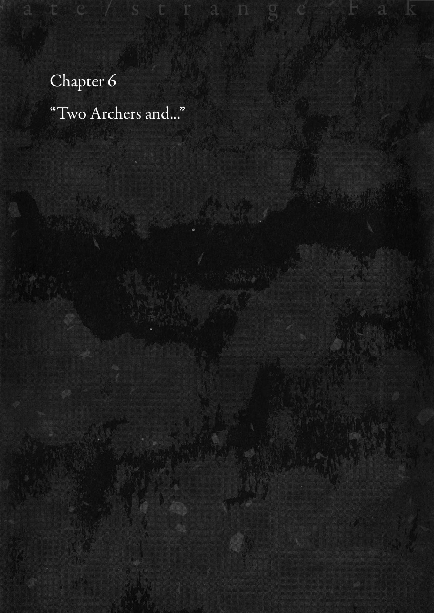
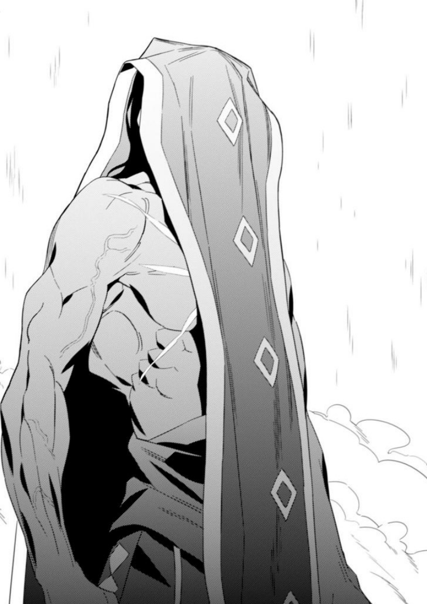

"Dois Archers e..."
Capítulo 6: Dia 1, Meio-Dia
Dois Archers, e...
Em um sonho.
"Yay! Um cachorrinho!"
Um grito inocente ressoou pelo jardim banhado de sol.
"Tem um gatinho também! E um esquilo!"
Ela correu atrás dos animais que disparavam de um lado para o outro pelo gramado, pegou um deles e o abraçou.
"Você trouxe todos eles, não trouxe, Sr. Black? Obrigada!"
A garota ergueu os olhos na direção da enorme sombra negra — Rider — que se contorcia. Tsubaki chamava o Servo de "Sr. Black"; ele não parecia assustá-la.
Incontáveis pássaros cruzavam o céu lá em cima, e pequenos animais corriam cheios de energia ao seu redor. O jardim tinha o ar de um pequeno zoológico de contato, e Tsubaki estava feliz ali.
"Tsubaki, já está quase na hora do almoço."
"Lembre-se de lavar as mãos."
"Vou lembrar!"
Ao ouvir os pais, Tsubaki entrou em casa. Mas se virou uma vez para lançar mais um olhar ao jardim mergulhado em sol.
Pássaros cantando. Gatos e cachorros se aquecendo ao sol sobre o gramado. Esquilos mastigando nozes junto dos filhotes. Era a imagem exata do jardim ideal dela. Só a grande sombra negra ondulando em seu centro destoava da cena. Tsubaki, que parecia não notar a estranheza daquilo, sorriu com satisfação.
Sem ter consciência do que estava acontecendo no mundo para pagar por seu modesto jardim.
Um motel barato.
"Agora, as notícias. Clínicas veterinárias de toda Snowfield estão em estado de pânico. Desde o início desta manhã, animais por toda a cidade vêm entrando em estado de coma, e cresce entre os moradores a preocupação de que isso possa ser uma nova forma de doença contagiosa. Todos os animais afetados logo recuperaram a consciência, mas, com base no fato de que manchas castanho-avermelhadas apareceram em sua pele, uma investigação em cooperação com o Conselho Municipal de Saúde..."
"Aê! Finalmente terminei toda a burocracia. Consegui, Jack!"
Apesar das notícias no canal local a cabo, uma voz despreocupada enchia o quarto do motel barato.
"Celebrar é muito justo, mas, no momento, questiono a sabedoria de você gritar meu Nome Verdadeiro a plenos pulmões."
"Ah, verdade! Foi mal por isso! Nesse caso, vamos pensar num apelido para você! Algo tipo, ahn... o Retalhador Infernal Inglês, ou..."
"Apenas me chame de Berserker", disse o relógio Berserker, apontando seus ponteiros para o agitado Flat.
A animação de Flat tinha a ver com o celular em suas mãos. Era o modelo mais recente, capaz de enviar e-mails com fotos anexadas e fazer chamadas internacionais. Ele estava radiante por, com aquilo, finalmente conseguir entrar em contato com seu professor na Torre do Relógio.
"Finalmente estou conectado a todo tipo de coisa. Ontem eu fiz questão de comprar o aparelho de verdade, mas só consegui usá-lo como câmera e rádio."
Flat estava olhando para a tela, vendo uma variedade de fotos. Entre elas, por exemplo, havia uma da casa de ópera destruída.
"Queria ter conseguido uma foto da performance daquele Espírito Heroico ontem. Fiquei tão empolgado por estar sendo entrevistado que acabei perdendo a chance..."
"Bem, suponho que tirar fotografias seja uma forma de obter informações sobre Espíritos Heroicos inimigos..."
Jack tentava enxergar o lado positivo da situação.
"Ah, mas eu consegui uma foto do Apóstolo Morto e também de outro Espírito Heroico!" respondeu Flat, com os olhos brilhando. Ele virou a tela para o relógio. Nela aparecia a imagem do Apóstolo Morto que havia causado destruição no estacionamento da delegacia no dia anterior. "Isto é valioso! Todas as outras pessoas que tiraram fotos apagaram tudo por causa da hipnose daquelas moças da Igreja! Ah, ainda bem que eu treinei para resistir a sugestão hipnótica!"
"Espere um momento. O vampiro me preocupa, mas, mais importante, conte-me tudo sobre esse 'outro Espírito Heroico'."
"Ah, é mesmo. Seus olhos estavam grudados na luta entre aquele padre e o Apóstolo Morto, Jack, então você não teria percebido."
"Por que você não me disse isso na hora!?"
"Bem, foi só por um instante, então achei que podia esperar", respondeu Flat com leveza.
Berserker pensou que já passara da hora de dar uma boa bronca no Mestre e estava prestes a embarcar num esporro telepático. Antes, porém, que pudesse começar, as palavras seguintes de Flat esfriaram sua irritação.
"Além disso... se a gente tivesse vacilado e feito escândalo, tenho quase certeza de que teríamos morrido na mesma hora."
"...O quê?"
"Nunca vi uma massa de energia tão absurda antes. Nem é uma questão de que habilidades ele tem, ou de qual é o Nome Verdadeiro dele... Acho que a gente provavelmente morreria no instante em que ele colocasse os olhos na gente."
A expressão de Flat era a mesma de sempre, mas Berserker entendeu intuitivamente a verdade nas palavras do garoto. Eles haviam roçado na morte, e Flat, em vez de despejar aquilo na mesma hora, simplesmente esquecera de mencionar o assunto até então. Esse fato deixava Berserker inquieto, mas, ao mesmo tempo, lhe transmitia uma estranha sensação de segurança.
"...Sinceramente, você é um caso à parte... Eu o tomava por um simples idiota, mas agora vejo que consegue ser seco nas coisas mais estranhas."
"Você me achou idiota esse tempo todo?"
"Presumo que esteja chateado?"
"Não. Na verdade, até fico meio feliz." Sorrindo animadamente, Flat pensou na Torre do Relógio, que era quase sua segunda casa. "As pessoas sempre tiveram um jeito estranho de ter medo de mim ou me evitar, desde que eu era bem pequeno... Os únicos que me chamam de coisas como 'idiota' ou 'imbecil' na minha cara são o professor, a irmã dele, a princesa, todo mundo do nosso departamento e os veteranos..."
O tom de Flat era solene. Berserker quase simpatizou com ele por um instante, mas logo desistiu da ideia.
"Isso não seria... bem... gente demais para a maioria das pessoas?"
Vários minutos depois. Londres. A Torre do Relógio.
Enquanto Snowfield saudava o amanhecer, a manhã ainda estava longe de chegar a Londres. Em uma sala da Torre do Relógio — o núcleo da magia — dois de seus executivos haviam se sentado frente a frente para discutir a Guerra do Santo Graal em Snowfield.
"Eu sabia que ele era um idiota... e um imbecil...", murmurou Lord El-Melloi II, fazendo uma careta. O homem sentado com ele — Rocco Belfaban — soltou um suspiro antes de responder.
"Concordo, Sr. II."
A dupla observava imagens transmitidas por magos enviados para se infiltrar em Snowfield. Uma poça de mercúrio usada em comunicação mística exibida naquele momento uma gravação do noticiário local da cidade.
"Hã? Eu estou na TV? Nossa, será que o professor ou a Reines estão vendo?"
Mal El-Melloi viu um Flat empolgadíssimo se virar para a câmera e dizer aquilo, sentiu com total nitidez como se seu estômago estivesse sapateando enquanto tocava violino da pior maneira possível. Rocco, vendo os sulcos profundos na testa de El-Melloi, dirigiu-se a ele com meia compaixão.
"Carrego parte da responsabilidade por tê-lo empurrado para você em primeiro lugar, mas, para ser sincero, você o manteve por tanto tempo que eu já passei da admiração e cheguei à exasperação." O velho mago fez a cadeira ranger enquanto continuava. "Mestre e discípulo entrando na Guerra do Santo Graal pelas costas do próprio professor... É melhor simplesmente admitir que imprudência faz parte do currículo de vocês."
"Não posso negar."
"Ainda assim, embora Flat seja um aluno problemático, ele também é um gênio sem mitigação. Se, por algum acaso, conseguir trazer o sistema do Graal Maior de volta para a Torre do Relógio, nada poderia ser melhor. E, se ainda por cima trouxer de volta um Espírito Heroico de verdade como objeto de pesquisa, isso pode reescrever os livros."
Em outras palavras, o velho sugeria sair dali ficando apenas com os melhores pedaços. El-Melloi II deu de ombros de leve.
"Entendo. Palavras dignas do chefe do Departamento de Invocação e Lord da Escola do Espiritualismo. Por outro lado, a diretora Eulyphis talvez dissesse abertamente 'ativo' em vez de 'objeto de pesquisa'."
"Poupe-me do sarcasmo. Você sabe melhor do que ninguém que ser Lord interino não significa coisa alguma."
"Sim, concordo. Não passo de alguém esquentando a cadeira. O que você acha que vai acontecer primeiro — nossa princesa atingir a maioridade, ou voltar a procissão solene que percorre Fuyuki e outras terras espirituais especiais?"
"Eu mandei poupar-me do sarcasmo."
Rocco era um conservador rígido, até mesmo para os padrões da Torre do Relógio. Em circunstâncias normais, deveria desprezar um "Lord temporário que se recusa a tomar partido dos conservadores ou dos reformistas" como El-Melloi II, mas, naquele momento, falavam quase de igual para igual. Isso porque sua própria posição também se parecia um pouco com a de El-Melloi II.
O verdadeiro Lord da Escola do Espiritualismo — seu diretor, o atual chefe da família Eulyphis — e seu sucessor, Bram Nuada-Re Sophia-Ri, estavam temporariamente ausentes da Torre do Relógio em uma missão especial. E, até voltarem de sua longa incumbência, Rocco fora nomeado para ocupar o posto de Lord como representante deles. Ele ansiava por poder, mas também sabia que não servia para o cargo de Lord, e por isso acabava se sentindo envergonhado nas conferências. Tão envergonhado que sentia a própria vida se encurtar toda vez que outro Lord, especialmente Lord Barthomeloi, lhe lançava um olhar. Graças a isso, aparentemente desenvolvera certo senso de empatia por Lord El-Melloi II, que devia sentir ainda mais vergonha do que ele.
"Ainda assim... esse homem de armadura que apareceu depois é um problema maior do que Flat. Se era um Espírito Heroico, suponho que devamos tomar isso como sinal de que os americanos não têm poder para manter a Guerra do Santo Graal totalmente em segredo."
"Só consigo imaginar que ele superou as expectativas deles, mas..."
El-Melloi II quis afirmar categoricamente que um Espírito Heroico aparecer voluntariamente na televisão era algo sem precedentes, mas a imagem de certo Espírito Heroico de mente aberta, que provavelmente teria dito seu próprio Nome Verdadeiro ao vivo se tivesse a chance, continuava surgindo em sua cabeça.
"...Bem, nunca se sabe o que pode acontecer numa Guerra do Santo Graal", murmurou para evitar o assunto, antes de expor suas opiniões sobre sigilo. "O sigilo mantido pela Igreja Sagrada e por nós mesmos não vai durar mais do que cinco anos. Depois disso entraremos na era em que qualquer pessoa poderá subir imagens em alta definição nas redes sociais em tempo real. Quando isso acontecer, a capacidade de difusão da informação vai ultrapassar a pressão para escondê-la. Estamos nos aproximando de uma encruzilhada em que teremos de escolher entre explorar novos métodos de sigilo... ou revelar alguma coisa."
"Humph... Peço desculpas, não venho acompanhando os tempos; que campo da magia usa o termo 'rede social'?"
"..."
El-Melloi II se lembrou de que o velho à sua frente era um mago conservador até o osso, que já torcia o nariz para telefones comuns, quanto mais celulares, e se perguntou por onde começar. Então o celular em seu próprio bolso tocou, avisando-o da chegada de um e-mail.
"Com licença."
Não reconheceu o endereço, mas o título "Para o Sr. Mago do Território Absoluto!" bastou para que El-Melloi II soubesse quem o havia enviado. Ele se esforçou desesperadamente para manter a calma enquanto, por dentro, gritava: "Merda."
"Meu estúpido aluno imbecil finalmente fez contato."
"Oh-ho. Que oportuna coincidência."
Em seguida, El-Melloi II passou os olhos pelo conteúdo do e-mail.
"Oi, Professor! Esta vai ser minha estreia em mandar e-mail pelo celular! Graças à sua ajuda, consegui invocar o melhor Espírito Heroico de todos! Olha só o meu Berserker!"
Havia uma foto anexada de um relógio em estilo steampunk.
"Não faço a menor ideia do que ele está dizendo..."
El-Melloi II se perguntou se não era o aluno dele quem havia recebido a habilidade Aprimoramento da Loucura, mas concluiu que Flat provavelmente já a possuía desde antes e manteve a calma. Alguns segundos depois, outro e-mail de Flat chegou.
"Descobri meu primeiro Espírito Heroico na cidade! Quer dizer, se contar Berserker e o cara de armadura, acho que ele é o terceiro. Parecia assustador, então é claro que eu não pude simplesmente ir lá cumprimentar. Fico pensando no que eu poderia fazer para virar amigo dele."
"Sinceramente, esse idiota..."
Ao abrir a foto anexada, sentiu com absoluta nitidez como se seu estômago tivesse começado a bater cabeça ao som de death metal até a morte. Então viu o homem espalhafatoso sentado na traseira do Cadillac da foto, e o lamento de seu estômago cessou de repente. E não só o estômago — sua respiração, seus piscares e talvez até seu coração podem ter parado por alguns segundos.
"Impossível..."
"O que foi, Sr. II?"
Rocco soava preocupado, mas, na cabeça de El-Melloi II, as peças já começavam a se encaixar. Ele recebera a notícia da cratera formada no deserto. Além disso, embora as roupas e o cabelo daquele homem fossem diferentes do que se lembrava, jamais deixaria de reconhecer o Servo absurdamente poderoso que já vira certa vez em Fuyuki. Se aquele Espírito Heroico estava envolvido, uma ou duas crateras eram o mínimo esperado.
Rocco fitava o rosto pálido de El-Melloi II, temendo que a ansiedade o fizesse desabar de novo, quando o tempo pareceu retomar o curso abruptamente, e El-Melloi II se pôs de pé, transbordando energia.
"...Com licença. Se importa se eu mandar um e-mail por um instante?"
"Ah... não", assentiu Rocco, intimidado. E-mail? pensou, vendo a expressão grave no rosto de El-Melloi II. Ele vai escrever uma carta aqui? Cadê a caneta? Aparentemente, estava sob a impressão de que a comunicação anterior chegara por telepatia mística, ou algo do tipo.
Às costas do velho mago, El-Melloi II digitava no celular com uma velocidade inacreditável.
"Como seu professor, estou lhe dando uma tarefa: aconteça o que acontecer, mantenha-se longe desse Espírito Heroico."
Depois de pensar por um momento, acrescentou mais uma linha.
"Se apresse e me mande o número do seu celular, seu *****."
Ao mesmo tempo. Snowfield. Último andar de Crystal Hill. A suíte real.
Gilgamesh, sem saber que sua foto quase parara o coração de um mago por vários segundos, contemplava a cidade através da parede inteira de vidro de seu aposento de luxo extravagante.
"Ha ha ha! Como imaginei; até na simples disposição de suas ruas e edifícios, a cidade de Uruk é mais bela!" Ria de bom humor, comparando aquela vista à cidade que um dia governara.
Depois de retornarem de Cadillac à oficina de Tiné, ele fizera Tiné recolher apenas o estritamente necessário e a levara para o último andar do hotel-cassino. Naturalmente, os fundos vieram de seus ganhos no cassino do dia anterior. Como usava a fortuna que ganhara naquele cassino no próprio hotel deles, a administração passou a tratá-lo como seu cliente mais precioso.
Além de Tiné, alguns de seus subordinados vestidos de preto ficaram ali como guarda-costas. Um homem ostensivo, seguido respeitosamente por uma multidão. Para os funcionários do hotel, deviam parecer algum bilionário e seus criados. Talvez, por causa da idade, tomassem Tiné por filha de um criado ou pupila do homem rico.
Tiné não compreendia as intenções de Gilgamesh. Ele era um rei, então provavelmente queria se estabelecer nos aposentos mais luxuosos da cidade. Para ela, porém, mudar-se para um lugar tão chamativo era apenas inquietante. Muito provavelmente estariam sendo observados pelos magos inimigos que haviam construído a cidade e, como aquilo nem sequer era uma oficina, seria difícil prepará-lo contra ataques. E, mesmo que o transformassem em uma oficina, isso mal bastaria para aliviar sua ansiedade.
"Ouvi dizer que houve um caso numa Guerra do Santo Graal anterior em que um Mestre destruiu uma oficina derrubando o hotel inteiro onde ela ficava. A organização dos nossos inimigos é vasta, então eles podem tentar nos destruir junto com Crystal Hill", aconselhara ela.
"Que façam o que quiserem", respondera Gilgamesh com facilidade. "Normalmente eu diria para você superar sozinha esse tipo de trivialidade, mas suponho que fui eu quem a convocou a este lugar. Ao menos lhe emprestarei um paraquedas."
Era impossível dizer se Gilgamesh falava sério ou brincava. Continuou a observar a cidade lá embaixo com porte gracioso. Não demorou para se deslocar até a parede oeste do aposento.
"Parece que meu amigo também está num humor bastante festivo", soltou uma risada, olhando para a grande floresta que se estendia até onde os olhos alcançavam. "Quero dizer, fazer uma mata tão vasta assim dançar..."
Tiné, ao ouvir aquilo, também voltou o olhar para a floresta. Como uma das Protetoras da Terra, logo percebeu o que estava acontecendo. A mata inteira se movia e sussurrava como se fosse uma única criatura.
"Seu amigo?"
"Sim. Conto sobre ele alguma hora, se me der vontade. Ainda assim, nosso banquete de reencontro foi bastante farto. Se não tivéssemos sido interrompidos, teríamos seguido por três dias e três noites."
Aquela batalha tremenda... por três dias inteiros...
As palavras de Gilgamesh fizeram Tiné sentir uma vertigem, e suor frio escorreu por suas costas. Não era piada; se o Rei dos Heróis dizia isso, então ele realmente podia lutar por três dias e três noites. Se havia algum motivo para que ele não pudesse, esse motivo era ela, sua Mestre.
Como maga e herdeira do poder ancestral, ela sempre se julgara forte. Mas o que podia fazer diante de Espíritos Heroicos tão poderosos? Tiné continuava a se perguntar isso, mas estava decidida a usar tudo o que possuía.
"...No momento, nossos aliados estão rastreando os movimentos de outros magos. O chefe da família Kuruoka, que parece ser um dos arquitetos do sistema desta cidade, está se comportando como se não tivesse nada a ver com a Guerra do Santo Graal, mas..."
"Por que está me relatando isso? Como Mestre, é você quem decide como agir."
"...Sim, Vossa Majestade."
Gilgamesh lançou um olhar à Tiné abatida, abriu um sorriso malicioso e perguntou: "Então, Tiné, você quer recuperar esta terra, não quer?"
"...!
É claro que quero!"
"Nesse caso, não concorda que transformar esta paisagem banal num ermo, junto com aqueles magos vira-latas, seria o jeito mais rápido de fazer isso?"
"O quê...?"
Aquilo não pareceu mera brincadeira. Gilgamesh, o Rei dos Heróis, podia facilmente realizar o que acabara de dizer. A batalha no deserto, no dia anterior, já lhe ensinara que ele tinha esse poder.
"Vossa Majestade brinca..."
"Eu brinco? Não é essa a solução mais próxima do 'desejo mais querido' de seus ancestrais? Que diferença existe entre a vida do palhaço que primeiro me invocou e a desses vira-latas que rastejam por esta cidade? Não seria mais simples usar esses Selos de Comando seus e me ordenar que apague a cidade? Eu poderia até esperar seus compatriotas evacuarem."
"..."
Tiné pensou por algum tempo, então respondeu timidamente: "Se eu cometesse tal atrocidade... seria igual aos magos que roubaram esta terra."
"Insuficiente. Essa é uma resposta que você foi buscar, não uma que pensou por si mesma."
"...!"
Tiné sentiu profunda vergonha por ter sido lida com tanta facilidade. Até ela sabia que aquela não era a resposta certa.
Eu jurei que seria ainda mais gananciosa que os magos e tomaria esta terra de volta. Então por que hesito em destruir esta cidade? Por quê? Por quê? Por quê?
Tiné baixou a cabeça, em choque, incapaz de compreender até o próprio coração. Não conseguiu responder à pergunta do rei. Restava-lhe apenas enfrentar seu julgamento. O coração da menina começou a se encher de um medo que pensara ter deixado para trás. Desde o começo, ela se preparara para a morte. Agora, porém, estava mais assustada com a possibilidade de decepcionar aquele Espírito Heroico.
Gilgamesh viu o estado em que Tiné se encontrava, percebeu exatamente o que ela pensava e riu ao continuar.
"Então... você começou a duvidar. Aprovo."
"O quê...?"
"A dúvida é a base para demolir a fé cega. Por que está com essa cara sombria? Eu só estava provocando você um pouco. Deixe isso passar."
Obviamente não havia nada de "provocação" no peso do que ele dissera, mas, por ora, Tiné sentiu alívio. Sua insegurança, porém, não desapareceu. Ela se agarrou ao seu coração.
"Ainda assim... mesmo deixando seu desejo de lado, quando você olha para o lixo humano, não sente vontade de explodir tudo?" despejou Gilgamesh, num tom entediado, enquanto voltava a olhar a cidade.
"...?"
"Sinceramente... ontem eu percorri esta cidade pessoalmente, e a maioria dos vira-latas desta era é completamente imprestável. Vira-latas deviam florescer em meu jardim, mas apenas crescer em número é algo feio."
"O que... pretende fazer a respeito?"
Tiné se alarmou com a possibilidade de o Rei dos Heróis decidir de repente "remover" os habitantes da cidade de sua vista. Como para aliviar tais preocupações, porém, Gilgamesh deu de ombros.
"Não se preocupe com isso. Eu jamais me daria ao trabalho de limpar lixo." Gilgamesh soava entediado enquanto examinava a cidade. "Embora, se eu viesse a encarnar e de fato saborear os prazeres da vida, seria outra história. Quando esse momento chegar, talvez eu considere abater os vira-latas indignos da vida, mas isso não tem relação comigo agora. Se os vira-latas escolherem uma ruína lenta, limitarei-me a assistir ao fim tolo deles com uma gargalhada."
Então prosseguiu, nostálgico de um passado remoto e parecendo falar meio consigo mesmo.
"Se meu jardim fosse arruinado por monstros em fúria, eu não poderia ignorar. Mas, se esse é o caminho que os vira-latas escolheram para si mesmos, não me oponho. Ainda assim, se deixarem de perceber que uma escolha continua existindo, talvez eu ao menos lhes conceda adversidades como marcos orientadores."
Ao ouvir essas palavras, Tiné sentiu ao mesmo tempo alívio e reverência. Esse Rei dos Heróis era, sem dúvida, um rei que trataria a Terra inteira como seu jardim. Um rei entre reis, equipado com um "eu" inabalável, que pronunciaria sentença sobre a raça humana.
Tiné percebeu algo ali que não era justiça divina. Continuou observando Gilgamesh intensamente, na esperança de identificar o que era.
"O que foi? Finalmente percebeu que o maior prazer deste mundo é contemplar minha glória? Muito bem, eu permito. Fite-me à vontade e transmita essa história a seus descendentes até que as estrelas pereçam."
Tiné achou que, desta vez, ele devia estar brincando, mas não conseguia afastar a sensação de que falava sério.
Eu não entendo muito bem, mas ele realmente é uma pessoa incrível...
Tiné — que, embora madura para a idade, continuava sendo uma criança em essência — parecia aceitar a fala e a conduta excêntricas de Gilgamesh, e até seu aspecto — extremo, se julgado por padrões comuns —, como "o jeito que reis simplesmente são". Em certo sentido, podia-se dizer que os dois eram altamente compatíveis.
Então o Rei dos Heróis abriu a boca para lançar outra de suas proclamações indiferentes e caprichosas.
"Pois bem, hoje... suponho que devamos começar removendo as pragas voadoras."
"Pragas voadoras?"
"Sim. Ao que parece, existe um sujeito grosseiro que se interpôs entre mim e o alegre reencontro com meu amigo. Ontem percorri a cidade em busca do desgraçado, mas não o encontrei. Portanto, não resta nada além de sentar e esperar que venha até mim."
"Esperar...? Quer dizer aqui?"
"Naturalmente", respondeu o Rei dos Heróis à desconcertada Tiné, com a voz transbordando confiança. "Um dos adversários mais formidáveis desta Guerra do Santo Graal assumir posição num lugar tão conspícuo quanto este não passará despercebido. É claro, meu amigo — outro inimigo perigoso — está fazendo algazarra na floresta... mas, para qualquer lado que as pragas sejam atraídas, haverá menos delas."
Tiné não entendia exatamente em que Gilgamesh se baseava para afirmar aquilo, mas, em todo caso, ele o dizia com confiança.
"Insetos não resistem a luzes ofuscantes. Assim que eu os atrair, irei incinerá-los sem deixar vestígios."
E então, no instante seguinte... um vento cortante atravessou a cidade de Snowfield.
A delegacia. Gabinete do chefe.
"Iuhuu. Tudo bem, novato?"
A voz de Francesca transbordava energia juvenil.
"Vai pra casa, sua velha maldita."
O chefe praticamente cuspiu a resposta.
"Oh? O que é isso? Eu já sabia que você me chamava disso pelas costas, mas dizer na minha cara assim talvez até machuque meus sentimentos. Eu gosto mais de feridas físicas do que mentais, então queria que você pensasse antes de falar."
"Cala a boca."
O chefe estava abertamente hostil à garota gótica lolita, mas ela não demonstrava o menor sinal de que fosse embora.
"Tá, tá, vou ficar quieta. Mas me deixe dizer só uma coisinha: você vive repetindo 'velha, velha', mas, sabe, só faz três anos desde que comecei a usar este corpo. Até os órgãos dele são bonitos. Quer dar uma olhada?"
Ao dizer isso, Francesca ergueu rapidamente parte do vestido, expondo o umbigo. E algo bizarro junto com ele.
À primeira vista era uma barriga bem desenhada, mas havia ali algo que não pertencia àquele corpo: um zíper largo, instalado diretamente na carne. Era feito de um material parecido com dentes humanos e se estendia desde perto da caixa torácica, dos dois lados, juntando-se acima do umbigo. Só de imaginar o que se veria se aquilo fosse aberto já dava arrepios.
"E então? Quer ver? Quer, não quer? Dar uma boa olhada nos o r g ã o s s e c r e t o s de uma garota?" Francesca deu uma risadinha sedutora. O chefe, porém, não se abalou nem um pouco.
"O que você quer? Veio rir da minha cara porque eu me ferrei?"
"Claro que não! Vim ver como você está! Mas que desastre, hein. Quero dizer, um Apóstolo Morto ser Mestre? Nem eu poderia ter previsto isso! Temos que eliminá-lo logo!"
"Mentirosa. Qualquer um percebe que você está secretamente radiante porque as coisas ficaram interessantes."
"Oh, está tão na cara assim? Mas saiba que eu odeio mesmo Apóstolos Mortos. Eles são inimigos de toda a raça humana, afinal. Eu estou do lado da humanidade, então jamais deixaria gente como eles se dar bem."
Francesca empinou o peito com autoconfiança.
"Você só está caçando presa", cuspiu o chefe outra vez.
"O que foi? Emburrado? Ver aquele padre bonitão roubando seu holofote foi um choque tão grande assim?"
"Mais importante: como vamos lidar com a Igreja Sagrada?"
"Pode ignorá-los por enquanto. Qualquer Mestre que queira correr até eles no último instante vai fazer isso por conta própria de qualquer jeito."
Francesca girou a sombrinha, então estufou as bochechas de repente.
"De qualquer forma, houve partes do que aconteceu ontem à noite que nem foram divertidas para mim."
"Quais partes?"
"Ora, no fim quem se destacou foi um executor e um Apóstolo Morto! Isso não está certo! Gente de fora como eles não devia ter papéis tão grandes nos primeiros movimentos!"
Francesca sacudia a sombrinha e o punho enquanto falava. Então de repente parou, abriu bem os braços e declarou para ninguém em particular:
"Servos e seus Mestres ainda são as estrelas da Guerra do Santo Graal!"
"..."
"...Você não concorda?"
Assim que se virou para o chefe com um largo sorriso... a área ao redor deles foi engolida pelo estrondo de uma explosão, e todos os vidros das janelas do gabinete do chefe se estilhaçaram.
"!?"
E não foi só o gabinete. Um rugido ensurdecedor e uma rajada de vento destruíram em pedaços todas as janelas do lado norte da delegacia.
"Ah ha ha ha ha ha! Agora começou! Já comprou o folheto? Pegou a pipoca? Ah, mas no seu caso acho que seriam donuts, né, chefe. Anda logo, ou você vai perder a luta do século!"
"Sua desgraçada...!"
O chefe fuzilou Francesca com os olhos. Ele ainda não fazia ideia de que a delegacia não era o único prédio com vidraças quebradas...
Algumas dezenas de segundos antes. Norte de Snowfield. Um grande desfiladeiro.
Um desfiladeiro de argila vermelha, vários quilômetros ao norte da caverna onde Gilgamesh fora invocado.
O homem estava de pé sobre uma elevação que atingia quase a mesma altura do último andar de Crystal Hill. Era um homem magro e seco, com pouco mais de dois metros de altura. Suas mãos seguravam um arco. Era maior do que um arco longo comum, mas ainda assim parecia um pouco pequeno nas mãos daquele homem alto.
Seu traje ia além de "excêntrico" e entrava no território do que só se podia chamar de "bizarro". A primeira coisa que saltava aos olhos era um longo pano ornamentado pendendo verticalmente sobre seu corpo. E não caía dos ombros; o tecido estava centrado no topo de sua cabeça e, depois de cobrir por completo o rosto e a nuca, descia de modo a ocultar tanto a frente quanto as costas do corpo. As únicas partes da cabeça que despontavam sob o pano eram as orelhas. No torso, porém, ele não vestia nada além disso. Cada centímetro de pele exposta estava tingido com um corante escuro. Havia também algum tipo de desenho marcado sobre ela com um pigmento branco, mas ele permanecia escondido sob o pano acima mencionado, e era impossível vê-lo por inteiro.

O homem — que, à primeira vista, parecia prestes a surgir em algum jogo de terror e sair perseguindo o protagonista — sorriu por baixo do pano que lhe cobria o rosto e, em silêncio, retesou o arco.
Então seus dedos soltaram a corda e dispararam uma flecha. Uma flecha que voou muito mais rápido que o vento e superou até a velocidade do som.
Bem acima de Snowfield.
Um vento como lâmina traçou uma linha reta pela cidade de Snowfield. Cortava o ar, espalhando ondas de choque. Quando o rugido semelhante ao trovão enfim encheu a região, o vento já havia passado.
No centro daquele vento estava uma única flecha. Ela avançava rumo ao topo de um arranha-céu no coração de Snowfield — Crystal Hill.
A flecha disparada pelo homem misterioso seguia em frente como um laser, desafiando as leis da física ao jamais perder velocidade ou altitude. Já havia percorrido mais de vinte quilômetros. Só isso já bastava para provar que o arqueiro não era humano, nem um mago comum.
Ondas de choque atravessaram o céu sobre a cidade. O impacto e o ruído, juntos, foram estilhaçando um após o outro os vidros de todos os prédios abaixo da trajetória da flecha.
Nenhum ser humano — não, nem mesmo um Espírito Heroico — sairia ileso de um impacto direto com um projétil desses. O golpe reduziria toda a parte superior de seu corpo a carne moída antes mesmo de atravessar o crânio.
A flecha avançava em linha reta para seu alvo: Gilgamesh, o Rei dos Heróis, que se posicionara no andar mais alto de Crystal Hill.
Ou melhor, para a cabeça da garota que estava ao lado dele — sua Mestre.
Crystal Hill. A suíte real.
Tiné, que estava voltada para Gilgamesh, voltou-se de repente para a janela norte.
"O quê...?"
O som ainda não a alcançara. Ela apenas sentira uma perturbação na mana que preenchia o céu e se voltara para ela sem motivo específico. Quando percebeu que o vento estava sendo rasgado em pedaços, já era tarde. Um ponto minúsculo de morte se fechava sobre a garota, perto demais para que reagisse a tempo. Não importava o que tentasse fazer agora, não havia como escapar daquela flecha supersônica.
Pelo menos, não para ela.
"..."
No instante seguinte, quando a flecha chegou a vinte metros do hotel, um trovão ressoou além do vidro. Houve um clarão ofuscante, e incontáveis raios minúsculos cortaram o céu. Um deles pareceu atingir a flecha, e aquilo que deveria ter sido um golpe fatal se desintegrou no ar a uma curta distância do alvo. As ondas de choque, porém, ainda assim estilhaçaram o vidro e atacaram todos os presentes no aposento.
" "
Um encantamento sem palavras. Um vento brotou da mão de Tiné e se tornou uma parede protetora, afastando a chuva de cacos de vidro dela, de Gilgamesh e de seus seguidores de terno preto.
"Meu senhor, está ileso?" perguntou a Gilgamesh assim que conseguiu estabilizar a própria respiração.
"Não foi nada."
O Rei dos Heróis saíra sem ferimentos, mas parecia contrariado.
"O que foi aquele relâmpago...?"
"Os próprios raios são meus Fantasmas Nobres. Ao que parece, interceptaram algum ataque", respondeu Gilgamesh com descaso.
"Um ataque?" Tiné não conseguiu conter a exclamação.
Quando olhou pela janela, viu vários discos flutuando ao redor do topo do edifício. Os Fantasmas Nobres continuavam a fazer suas rondas, revestidos por pequenos relâmpagos, traçando belos desenhos geométricos contra a paisagem.
"Auto Defensors. Havia a possibilidade de meu amigo lançar um ataque surpresa por brincadeira. Eu os deixei preparados por precaução, mas..."
Gilgamesh olhou para o norte e puxou de seu "tesouro" um Fantasma Nobre — uma lente estranhamente curvada presa a um aro de ouro flutuando no ar. Apesar de ter apenas uma única lente, ela mostrava paisagens distantes como um telescópio.
"Jamais imaginei que serviriam para repelir as flechas de um mero Archer."
A imagem que apareceu dentro do aro era a de um homem, voltado na direção deles e preparando o arco sem temor algum.
"Um Archer...?"
Uma dúvida atravessou a mente de Tiné. Archer não era ninguém menos que Gilgamesh, parado ao lado dela. Então aquele homem seria um Rider, Assassin, Berserker ou alguma outra classe que por acaso usava arco? Assim que avistou o arqueiro pelo aro dourado, surpreendeu-se imediatamente com o quão altos eram seus atributos. Em termos de valores puros, podia-se até dizer que ele superava Gilgamesh.
Berserker, então...?
Tiné se manteve em guarda. Gilgamesh, porém, permaneceu sem expressão.
"...Vai vir?" murmurou.
Mas o segundo disparo já havia sido lançado.
Os relâmpagos dos Auto Defensors se ativaram para interceptar a flecha, mas, embora vários raios a atingissem, ela escapou pelos espaços entre eles e voou em linha reta contra Gilgamesh. A velocidade com que a eletricidade viaja pelo ar — isto é, a velocidade do raio —, embora inferior à da luz, ainda assim deveria ser mais do que suficiente para alcançar qualquer flecha comum. A velocidade daquela flecha, porém, estava além dos limites humanos.
Gilgamesh materializou de imediato sua armadura e desviou a flecha com a manopla esquerda. Ao que parecia, isso não fora capaz de anular completamente o impulso do disparo, pois uma parte da armadura rachou e fragmentos dourados se espalharam pelo chão.
"...Oh-ho."
Gilgamesh examinou os pedaços quebrados da própria armadura com um olhar gelado, estreitou um pouco os olhos e...
"O bárbaro tem habilidade considerável com o arco, mas ignora as boas maneiras. Vou usar esse sujeito para remover a ferrugem dos meus tesouros!"
No instante seguinte, um Fantasma Nobre gigantesco surgiu além do vidro estilhaçado, flutuando ao lado do último andar.
"O que é..."
"Tiné, você vai na parte de trás."
"Posso?"
"Se eu a deixasse aqui, não conseguiria protegê-la por completo daquelas flechas detestáveis. Seria inconveniente se você, minha Mestre, morresse antes que eu cumpra o acordo que tenho com meu amigo."
Tiné respondeu à declaração casual de seu "rei" com um aceno firme e subiu na parte traseira do enorme Fantasma Nobre.
Um dos muitos Fantasmas Nobres que Gilgamesh possuía — Vimana. Com a forma de um iate dourado do qual brotavam asas de fada gigantescas, era uma pequena embarcação de guerra voadora. O tesouro do rei, que dizem incluir todo e qualquer tesouro, continha não apenas armas, mas também todos os frutos do intelecto humano.
Assim que Tiné se colocou de quatro na traseira de Vimana, Gilgamesh lançou sua nave dourada ao ar. Tiné quase foi arremessada pela aceleração súbita, mas invocou magia de quebra-vento e manipulação da gravidade e, de algum modo, conseguiu firmar o equilíbrio e a respiração.
Gilgamesh assumiu uma postura imponente na proa e lançou a embarcação em linha reta na direção do arqueiro. Flechas — presumivelmente disparadas por seu alvo — voavam periodicamente em sua direção, mas as dezenas de sistemas de interceptação que Gilgamesh havia disposto ao redor da nave as derrubavam com perfeição.
"Incrível..."
A garota percebeu mais uma vez exatamente no que estava montada e não conseguiu reprimir a exclamação.
"Até mesmo uma coisa dessas..."
A emoção na voz da garota, que pensara ter jogado fora todas as suas, era admiração... ou seria anseio?
Norte de Snowfield. Na encosta elevada de um desfiladeiro.
"...Oh-ho", murmurou o Archer ao ver a embarcação dourada, já parada diante dele. Sua voz era baixa. Havia nela um traço de admiração, e um leve tom de autoescárnio.
"Foi você quem lançou aquele ataque surpresa. Presumo que não pretenda implorar pela própria vida?", perguntou Gilgamesh. Ele havia descido da proa da nave e pousado na elevação.
Em resposta, o arqueiro inquietante, a cerca de dez metros adiante, ergueu a cabeça lentamente.
"..."
"Tem alguma última palavra?", perguntou Gilgamesh.
O Archer misterioso, porém, não respondeu. Em silêncio, retesou o arco... e disparou sem hesitação uma flecha contra Tiné, que punha a cabeça para fora de trás do assento traseiro de Vimana.
"!"
O projétil supersônico investiu contra o rosto de Tiné. Talvez ela conseguisse amortecer a onda de choque com uma parede de vento, mas não havia como bloquear a própria flecha. Tiné mais uma vez tomou consciência da morte se aproximando diante de seus olhos, quando... os interceptores de Vimana — os Fantasmas Nobres de interceptação — a abateram no último instante.
"Tolo. Você imaginou que elas se desativariam quando eu desembarcasse?"
"..."
Ignorando as palavras de Gilgamesh, o Archer disparou uma segunda flecha, depois uma terceira, em rápida sucessão. Tiné já havia se escondido dentro da nave, mas ele continuava brandindo o arco com força capaz de atravessar a armadura de Vimana junto com ela.
Uma veia pulsou na têmpora de Gil. Se houvesse ali um observador, teria percebido que o homem não estava de fato tentando alvejar Tiné junto com a nave — apenas tentava provocar o Espírito Heroico Gilgamesh. Gilgamesh talvez não tenha notado essa provocação, ou, tendo notado, tenha ficado ainda mais irritado pelo Archer continuar a ignorá-lo e mirar sua Mestre, porque um traço de fúria começou a se infiltrar em seu tom até então impassível.
"Entendo. Sem dúvida é a escolha correta, se você está obcecado com a vitória, ou se escolheria o caminho mais fácil até ela. Eu talvez fizesse o mesmo por brincadeira, dependendo das circunstâncias."
Um instante depois...
"Mas atos assim só são permitidos porque sou eu quem os faz! Não são para alguém como você!"
Bradando uma declaração que levava a credulidade ao limite, Gilgamesh lançou incontáveis Fantasmas Nobres de sua Gate of Babylon, aberta atrás dele.
O Archer parecia indefeso sob a chuva de lâminas, algumas delas de alto rank. Ainda assim, brandiu o arco com a mão esquerda e passou a varrer a saraivada de Fantasmas Nobres com uma velocidade que desafiava até as expectativas de um Espírito Heroico.
"O quê?"
"..."
O Espírito Heroico, que repelira dezenas de Fantasmas Nobres sem sofrer sequer um arranhão, estendeu silenciosamente um braço na direção de Gilgamesh, com a palma voltada para cima, e o chamou de modo provocador com os dedos. Ao ver isso, Gilgamesh estreitou os olhos e se esforçou para conter a fúria na voz que ecoou pela elevação.
"...Vejo que você tem dedos leves. Nesse caso... que tal isto?"
Com um sorriso malicioso, Gilgamesh expandiu sua Gate of Babylon por uma ampla faixa da elevação. As entradas de seu tesouro, dispostas de modo a cercar o Archer por todos os lados, começaram a girar como um tornado. Então dispararam inúmeros Fantasmas Nobres com a força de metralhadoras, erguendo bem acima da elevação um verdadeiro redemoinho de luzes e impactos.
Dezenas, centenas, milhares de Fantasmas Nobres despejaram-se sobre o homem no centro do tornado. Eram lâminas ou sabedoria; sofrimento ou salvação. Havia espadas longas mata-dragões; espadas amaldiçoadas que trazem ruína; lanças matadoras de heróis; relâmpagos sem forma. Os originais de todos os Fantasmas Nobres que mãos humanas já possuíram ou criaram eram arremessados sem a menor contenção. Uma chuva infernal das lendas da humanidade, lançada de todos os ângulos concebíveis.
Tiné, testemunhando aquela cena aterradora, imaginou que nem um único pedaço da carne do Archer sobreviveria. Quando o redemoinho assentou, porém, revelou uma visão que traía tanto as expectativas de Gilgamesh quanto as de Tiné — o Archer, ileso, sacudindo a poeira do longo pano que cobria seu corpo, e montanhas de incontáveis Fantasmas Nobres empilhadas ao seu redor.
"Impossível..."
Gilgamesh, em contraste com a Tiné de olhos arregalados, apenas fitava o oponente em silêncio. Por algum tempo, reinou o silêncio sobre a elevação. Até ser rompido pela risada abafada do Archer.
"He... hehe... he... heh... ha... ha ha..."
Havia desprezo evidente nos sons audíveis debaixo do pano. "...O que há de tão engraçado?", perguntou Gilgamesh, sem expressão.
O Archer respondeu com uma única palavra, pronunciada com clareza:
"Fraco."
Se alguém que já tivesse enfrentado Gilgamesh no passado ouvisse aquela palavra, sem dúvida duvidaria da sanidade daquele homem.
"..."
Pareceu a Tiné que a temperatura da área despencara de repente. "Arremessar suas armas às cegas... faria melhor em jogar areia", continuou o Archer misterioso, apesar da atmosfera ao redor. "Só um verdadeiro fracote — ou uma fera sem mente — cairia diante de uma brincadeira dessas."
Era uma voz fraca, mas suas palavras eram mais do que mero deboche. Pareciam carregadas de alguma obsessão implacável.
"...Oh?"
A expressão de Gilgamesh mudou. Tiné temeu que ele explodisse de raiva, mas, ao contrário, um leve sorriso se desenhou nos cantos de sua boca. Naquele instante, a emoção dominante de Gilgamesh mudou de "raiva de um agressor sem modos" para "curiosidade em relação a um inimigo poderoso".
"...Saque a espada guardada no recôndito mais profundo do seu tesouro. Então seremos iguais", declarou o Archer misterioso ao Rei dos Heróis. Quer tivesse recebido essa informação de alguém, quer tivesse percebido uma presença excepcional dentro do "tesouro" durante o ataque anterior, ele estava dizendo a Gilgamesh para "vir com sua arma mais poderosa".
"Ea é praticamente meu outro eu. Não é uma espada a ser usada em um fracote como você", devolveu Gilgamesh à provocação com alegria, rangendo os dentes enquanto sorria.
Então outra espada apareceu na mão de Gilgamesh, no lugar de Ea, a Divisora — Merodach, tida como a original das espadas de seleção narradas em várias regiões do globo. Uma espada para determinar se o oponente merecia a honra de fazê-lo sacar Ea, que simbolizava o próprio Gilgamesh.
"Prove-me que é poderoso o bastante para ser digno de contemplar Ea."
"Tolo... se a tivesse sacado, não precisaria morrer", sussurrou o Archer, então estendeu para o lado a mão direita livre.
Um novo pano se materializou nela. À primeira vista parecia apenas uma faixa pintada com um desenho simples, mas qualquer um capaz de ver as coisas de outra perspectiva perceberia imediatamente o quanto aquilo era estranho.
"Isso é, sem sombra de dúvida... um Fantasma Nobre...!"
Até para os olhos de Tiné, a energia mágica que revestia aquela faixa parecia anormal. Quando Gilgamesh viu aquele pano, coberto por uma aura divina tão espessa que parecia ter sido usado por um deus de verdade, seus olhos se estreitaram ligeiramente.
"Difere um pouco dos deuses que conheço, mas o princípio parece ser o mesmo..."
Era um Fantasma Nobre que não despertava interesse algum em Gilgamesh, autoproclamado misoteísta. Ainda assim, ele estava curioso para ver que transformação o Archer exibiria agora. Sua Gate of Babylon já provara ser ineficaz, então não havia sentido em tentar um ataque surpresa. Gilgamesh assumiu uma postura imponente e esperou o oponente agir, com um olhar meio expectante.
"..."
O Archer sorriu por trás do pano e se preparou para liberar o poder de seu Fantasma Nobre. Alguns segundos depois, um golpe imbuído de divindade sacudiu a terra.
A grande floresta.
"Gil... parece estar lutando contra alguém forte..."
Enkidu interrompeu abruptamente o que fazia e voltou o olhar para o nordeste da floresta. Aos olhos comuns havia apenas uma extensão de árvores, mas Enkidu via outra coisa. Usando sua habilidade Detecção de Presença, conseguia sentir de longe a aura poderosa de Gil, assim como outra presença igualmente forte.
"É estranho. Tenho a sensação de que ultrapassamos o número de Espíritos Heroicos invocados numa Guerra do Santo Graal", pensou Enkidu, mas decidiu que esse tipo de coisa acontece e retomou o que estava fazendo. O tempo todo, porém, manteve-se alerta à presença de Gil, pronto para ir verificar imediatamente caso ela enfraquecesse.
"Oh?"
Como resultado, apenas poucos minutos depois, percebeu outra anomalia. Outra presença, completamente diferente, surgira de repente bem ao lado de onde seu amigo lutava contra o outro.
"Outra presença... e outra forte."
Na elevação.
Um golpe imbuído de divindade sacudiu a terra. Mas não fora o Archer misterioso quem o lançara.
"...O quê?"
Tiné, que espiara por cima do assento traseiro de Vimana, não conseguia acreditar no que via. No exato momento em que o Archer estava prestes a liberar o poder de seu pano, um cavalo surgira do nada, e a garota que o montava pousara atrás dele.
Ela provavelmente tinha entre dezesseis e dezoito anos. No mínimo, não parecia ter mais de vinte. Seu cabelo comprido estava preso de forma impecável na parte de trás da cabeça. O tom saudável de sua pele era envolvido por um traje peculiar de tecido macio e couro.
A garota, que transmitia uma impressão geral de vigor, aproximou-se silenciosamente do Archer por trás, com uma expressão de fria dignidade no rosto.
"...?"
Gilgamesh franziu a testa. O Archer, percebendo para onde ia seu olhar, tentou se virar... e o punho da garota afundou fundo em seu rosto coberto pelo pano.
O som do impacto foi nada menos que explosivo. O corpo do Archer foi lançado com a força de uma bala e se encravou na lateral de outra pequena elevação, que então começou a desmoronar.
Depois de um instante de silêncio, um simples fato dominava a cena — aquele braço esguio da garota havia feito voar um homem sobre o qual os Fantasmas Nobres disparados por Gilgamesh de sua Gate of Babylon não haviam surtido efeito algum.
A garota fulminou com o olhar o monte de escombros que enterrara o Archer vivo, os olhos cheios de um ódio poderoso, então lançou um olhar por cima do ombro para Tiné e Gilgamesh e declarou:
"Aquele demônio é minha presa. Não interfiram."
Depois de uma breve pausa, Gilgamesh estreitou os olhos.
"...É exatamente isto que querem dizer com 'estragar o clima', garota."
Pelo tom de Gilgamesh, Tiné julgou que ele estava definitivamente contrariado. Sua batalha de tirar o fôlego fora interrompida, e era natural que isso o irritasse. E, contando o primeiro dia, aquela era a segunda vez que alguém esfriava uma de suas lutas.
Como a situação era crítica, Tiné tentou ao menos descobrir a identidade do oponente. Havia, porém, um fato que a confundia profundamente. O pano enrolado no braço do Archer lhe parecera um Fantasma Nobre, e, ainda assim, exatamente o mesmo pano estava enrolado no braço da garota à sua frente. Não era só o desenho; até a poderosa aura divina, que parecia fazer o ar tremer ao redor, era idêntica.
Não pode ser... o mesmo Fantasma Nobre...?
Enquanto Tiné se perguntava isso, e Gilgamesh fervia em fúria... os escombros da elevação desabada explodiram com um rugido ensurdecedor, como um vulcão entrando em erupção.
Os poderosos reunidos numa Guerra do Santo Graal em que verdadeiro e falso se misturam... e o destino do Graal era arrastado cada vez mais fundo para o pântano caótico.